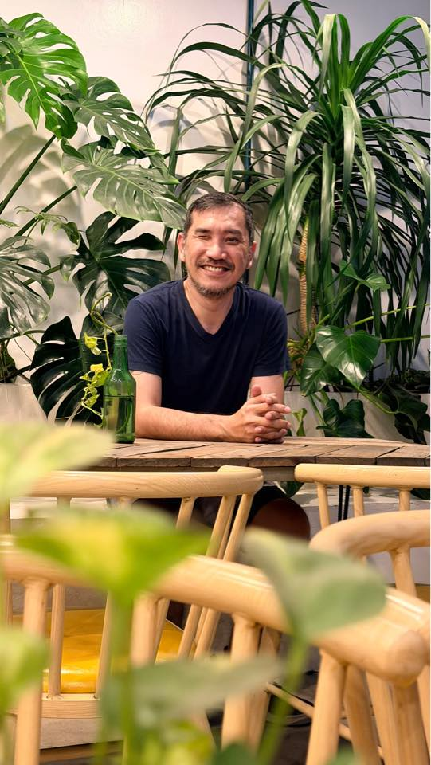

Ulam Stories

The Comfort of Rainy Day Sinigang
A deeply personal memory of cooking pork sinigang during the monsoon season, and why the sour broth always feels like a warm hug.
A deeply personal memory of cooking pork sinigang during the monsoon season, and why the sour broth always feels like a warm hug.

Reviewing that hidden neighborhood cafe where the barista takes 10 minutes to serve your coffee, and why it's absolutely worth the wait.

Navigating the oldest Chinatown in the world. From crispy fried dumplings to authentic hand-pulled noodles hidden in narrow alleys.

I'm a story-seeker, coffee enthusiast, and lifelong lover of a good home-cooked meal. Feed the Curious is my digital dining table—a place where I share my food adventures, quiet coffee moments, and the beautiful Filipino culture that ties it all together.
Whether you're looking for a nostalgic recipe, a recommendation for your next cafe hop, or just a little slice of life, pull up a chair.
Get to Know Me